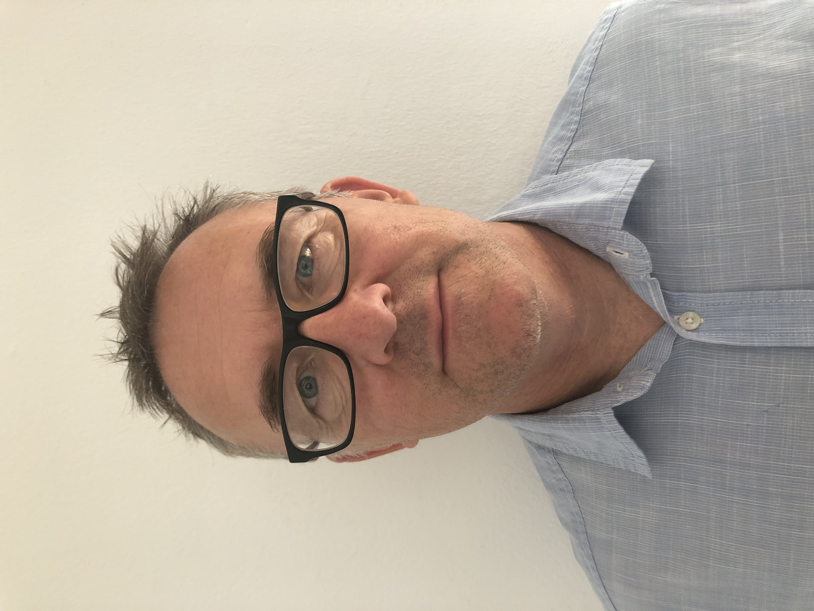

Paul Creaton

Summary
I am a Mathematics teacher with a wide skill set and exprience in Geomatics and GIS.
Education
2023 Health and Safety Training DATA Accredited (Learning Space Solutions)
2023 CLEAPSS H&S in the DT Classroom (Online)
2023 CLEAPSS Auditing HSE for D&T Department (Online)
2022 PGDip Geographical Information Studies, University of Ulster
2013 MST121 Using Mathematics, Open University
2012 Cabinet and Furniture Making Training
2004 Cambridge CELTA award
1999 PGCE Secondary Mathematics, DeMontfort University
1997 BEng Hons Civil Engineering, University of Hertfordshire II:1
1993 BTEC National Diploma Land Surveying and Cartography, DeHaviland College - Merit
Experience
Panaga School, Brunei Dec 2017 - present
- Design & Technology Teacher (Yrs 5-8)
- Science Teacher (Yrs 6,7 & 8)
Bridgeway Consulting Ltd, Nottinham UK Aug 2013 - Dec 2017
- Geomatics Surveyor
- Network Rail Controller of Site Safety
- Network Rail Engineering Supervisor
Head of Mathematica, Westley School, Bury St. Edmund's Jan 2013 - Aug 2013
- Whole School Lead on Mathematics
- Curriculum Development
- Mathematics Teacher (Yrs 5-9)
Rowden Farm Cabinet Makers, Devon, UK Aug 2011 - Jan 2013
- Undertaking training as cabinet maker
- Employment as cabinet and furniture maker
Panaga School, Brunei Sep 2004 - Aug 2011
- Class Teacher (Yrs 4-5)
- Maths Teacher (Yr7)
Geospatial and Geomatics Skills
- Photogrammetry
- Laser Scanning
- Control Surveys
- GPS Base Line Surveys
- Control Installation
- Point Cloud Processing
Software
- Autocad
- LSS
- Teramodel
- Cloud Compare
- Metashape
- Bentley Microstation
- Pix4D